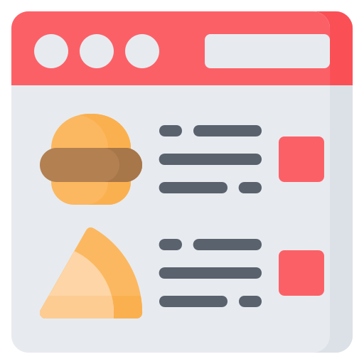

Hello. Welcome to my Website
I am an programmer in training. I was part of the Ten10 Academy 18 Graduate Scheme.
Outside of work, I love to read, take pictures, and cook exciting food.
My Skills.
Web Development
Through my skills learned in Ten10 and my efforts, through other online programs, I am learning the skills necessary to become a web developer.
Software Testing
As well as Web Development, I am contining to learn how to test web applications, through both manual and automated test processes.
Get In Touch
Please click the images below to get in contact.
I am UK based, so please take this into account when contacting me, and I respond quickest via messenger.
Best Regards and hope to hear from you soon.


Please see find my online CV and more about me below.

Below you may find examples of my projects

Regardé Manger: A mock web and mobile app for identifying what food item you are looking at
© 2020 Matthew Lawson.